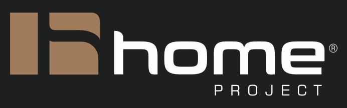
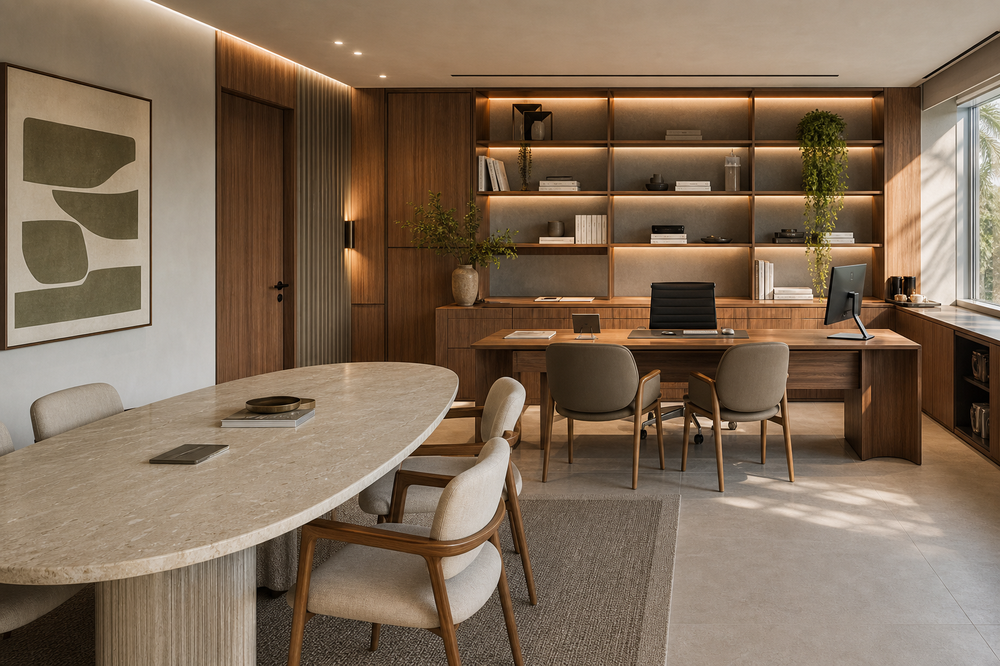

Quando faz sentido
Para lojas, clínicas, escritórios e espaços de atendimento que precisam melhorar experiência, fluxo e imagem.

Voltar ao portfólioComercial
Planejamento de ambientes para negócios que precisam unir presença, funcionalidade e execução com menos improviso.

Para lojas, clínicas, escritórios e espaços de atendimento que precisam melhorar experiência, fluxo e imagem.
Mapeamos uso, necessidades, materiais, etapas e pontos críticos antes de orientar a execução.
Um ambiente coerente com a marca, mais organizado para a rotina e mais claro para orçamento e fornecedores.